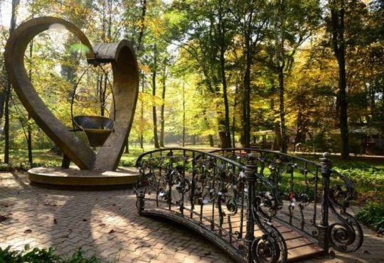
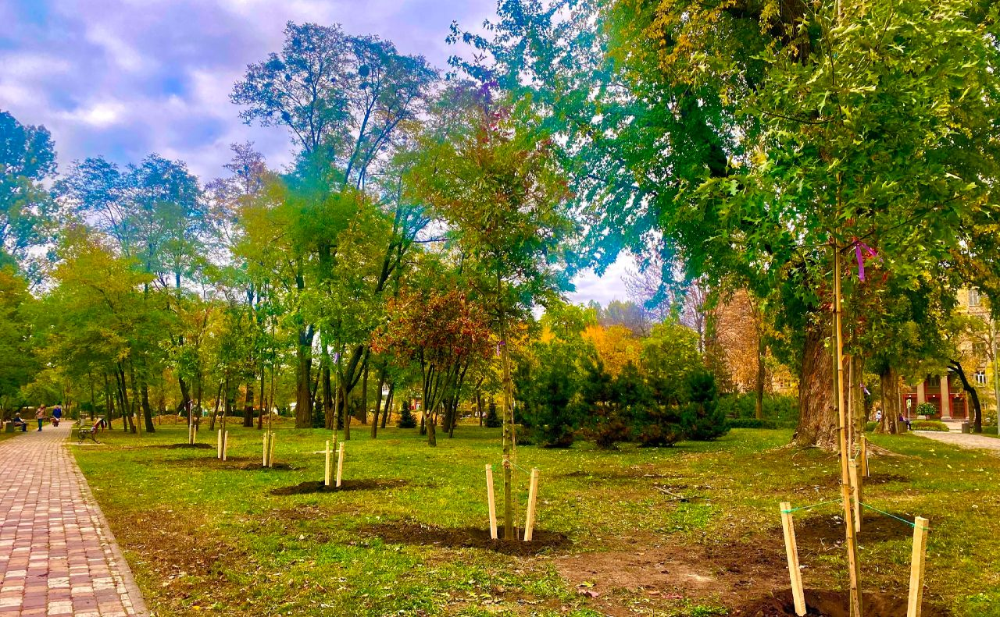

Допоможемо розвивати парки України, щоб
зберегти зелені легені України

Проблеми, які ми вирішуємо
- Відсутність зелених зон та парків у багатьох містах України.
- Недостатнє фінансування на підтримку та розвиток існуючих зелених зон та парків.
- Низька екологічна обізнаність серед громадян та влади.

Наша діяльність
- Організація проєктів та ініціатив, що сприяють створенню нових зелених зон та парків у містах та регіонах.
- Залучення фінансування на підтримку та розвиток існуючих зелених зон та парків.
- Робота з громадськістю та владою з метою підвищення екологічної обізнаності та збереження природних ресурсів.
Підтримайте нас
Ми знаємо, що багато з вас цінують природу та бажають зробити щось для її збереження та розвитку. Ми хочемо запросити вас приєднатися до нашого благодійного фонду, щоб допомогти нам підтримати та розвивати парки України.
Ваша допомога буде вкрай важливою для досягнення наших цілей. Навіть маленький внесок може зробити велику різницю. Приєднуйтесь до нашого фонду та зробіть внесок прямо зараз. Дякуємо за вашу підтримку!